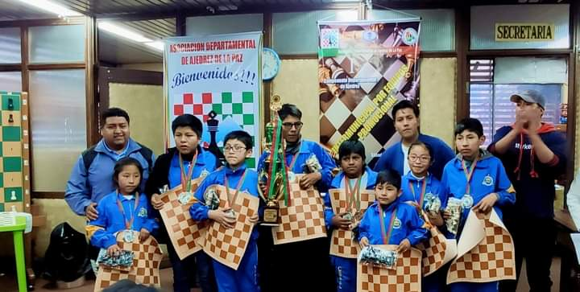

My name is Yosti Alexis Alejo Condori, I am a former chess player, I have been playing for 7 years, it could be said that since I was 11 years old I passed my first class, I did not think that I would go so far these 7 years that I was, I must say that I did not like it, nor did I know anything about chess, but my mother put me in that class so that I would be calmer and it did work. I would say that in these years I have made many achievements that I have been proposing to myself over time, I was the best under 16 and under 18 at the departmental level, those were my first achievements apart from participating in the plurals until the second phase, that has passed a year if I remember correctly, where another challenge came to me, that was to beat the best in all of Bolivia against GM Osvaldo Ronald Zambrana Enríquez. It was there when I wanted to be like him, to be the best player in Bolivia, but that's how the years went by where I didn't win the nations, until I came out national runner-up in Tarija, I qualified for the South American but as it was the first time it was bad for me. With that came the pandemic, with this I can say that I continued to dedicate myself to chess virtually, in which I continued to participate in tournaments, so much so that I returned to South America. came out of the top 10. For a moment in my life I thought I would leave school with nothing, but there was a last tournament in which I came out first and I left school happy, but I never thought that this would be the last one until now. This year 2022 I will be 18 years old, my last attempt to win the South American, but I could not win, my level is low for the competitive level, now I only teach at my school replacing my teacher who supports me so much, I am glad to know that at least if I am someone for the world since my history is there and I thank both my parents and my teacher for the support they gave me, with this I realized something. When I propose I do it.

Chess, I went back and you would tell me that I am more into video games
Basically my hobbies without playing video games, playing Dota 1 and 2, then WOW, when I play I'm always listening to music, it doesn't matter what kind of music as long as I'm comfortable when playing and so I don't forget everything since I'm on teacher at my school, I practice a little chess on weekends